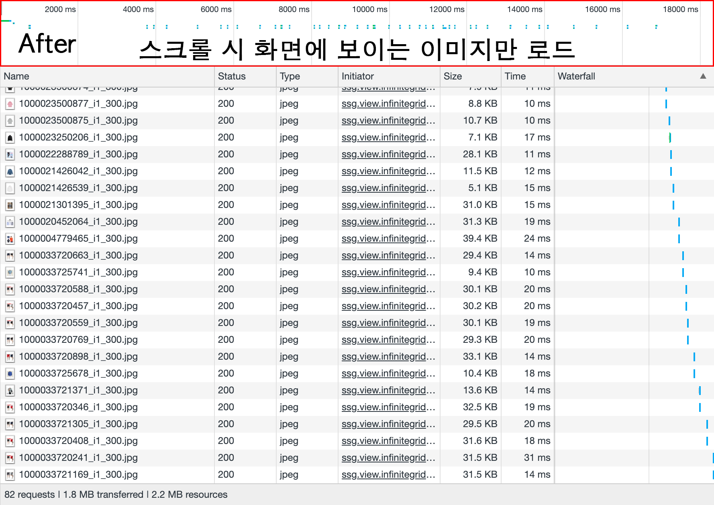
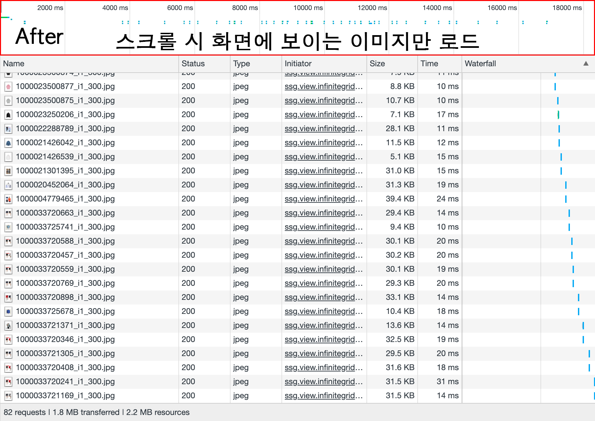

상반기 리뷰
2019. 6. 13
서비스 개발1팀 UI파트 - 김재호
The Agenda
- Observer API
- 무한 스크롤
- 스켈레톤 스크린
Observer API
Observer? 관찰자?
옵저버 패턴
한 객체의 상태가 바뀌면 다른 객체들에게
알려주고 자동으로 내용이 갱신되는 방식
ex. 엑셀 표) 사용자가 스프레드시트 값 변경 → 표, 그래프, 차트 변화
이때 모든 요소들이 동시에 즉각적으로 반응

옵저버
페이지에서 발생하는 어떤 일들을 감시
setInterval API
일정 시간마다 반복해서 변경사항이 있는지 확인
- 정확한 지연시간을 보장해 주지 않음
- 여러 개의 타이머 사용 시 웹 사이트 성능 저하 원인
- 메모리 절약을 위해 더 이상 필요하지 않을 때 취소시키는 것이 중요
var timeId = setInterval(function() {
//...
}, 5000); // 5초 마다 실행
clearInterval(timeId);
JS Observers
최신 브라우저에서 제공하는 옵저버 목록
DOM 정보 관찰
- MutationObserver - 엘리먼트의 변경 사항 감시
- IntersectionObserver - 뷰포트와 엘리먼트의 교차 감시
- ResizeObserver - 엘리먼트의 너비, 높이 변화 감시
성능 측정, 코드 상태 확인
- PerformanceObserver - 웹 성능 측정 데이터를 효율적으로 액세스
- ReportingObserver - 웹 사이트의 잠재적인 문제를 발견하고 모니터링
MutationObserver
노드가 새로 추가되거나 제거, 속성, 텍스트 내용 등
DOM 요소의 변경 사항을 감시하는 API
이전의 MutationEvents
성능 저하 및 안정성 문제로 DOM 이벤트 표준에서 지원 중단
일부 브라우저는 여전히 지원
- DOMAttrModified
- DOMAttributeNameChanged
- DOMCharacterDataModified
- DOMElementNameChanged
- DOMNodeInserted
- DOMNodeInsertedIntoDocument
- DOMNodeRemoved
- DOMNodeRemovedFromDocument
- DOMSubtreeModified
옵저버 vs. 이벤트
- 옵저버는 비동기 넌블로킹(non-blocking) API
- DOM 변경이 완료 될 때까지 콜백함수가 작동하지 않음
- scroll, resize 비용이 큰 EventListener 대체
- 어떤 옵저버는 사전 계산된 속성을 제공 (직접 계산 불필요)
- 이벤트는 호출 될 때 콜백이 시작되며 발생할 때마다 동기적으로 반응
- 이벤트에서 getClientBoundingRect() 처럼 성능에 비용이 많이 드는 메서드와 속성들을 사용해 직접 계산
- 이벤트는 캡처링, 버블링을 통해 전파, 더 많은 이벤트 발생
사용 방법
MutationObserver 인스턴스 생성
DOM 변경을 감지했을 때 실행 할 콜백함수
var observer = new MutationObserver(callback);
메서드
- observer.observe(target, config)
- 대상 요소 감시 시작 (감시할 DOM 노드, 옵션)
- observer.disconnect()
- DOM 변경 사항 감시 중지
- observer.takeRecords()
- 보류중인 DOM 변경 사항 목록을 반환, 동시에 레코드 대기열 비움
감시 시작
observe 메서드를 사용해 감시 시작
감시할 대상과 옵션들을 설정 후 옵저버에 전달
// 감시할 대상 선택
var target = document.getElementById('some-element');
// 감시할 옵션
var config = {
childList: true,
characterData: true
};
// 감시 시작 (감시 대상과 옵션 전달)
observer.observe(target, config);
감시 옵션
어떤 내용을 감시할 지에 대한 설정 (MutationObserverInit)
childList, attributes, characterData 속성 중 하나 true
그렇지 않으면 TypeError 예외 발생
var config = {
childList: true,
attributes: true,
characterData: false,
subtree: false,
attributeFilter: ['class', 'src'],
attributeOldValue: false,
characterDataOldValue: false
};
MutationObserverInit
| 속성 | 타입 | 설명 |
| childList | Boolean | 대상 노드 하위 요소의 추가 및 제거 (텍스트 포함) |
| attributes | Boolean | 대상 노드 속성 변경 |
| characterData | Boolean | 대상 노드 텍스트 값에 대한 변경 사항 |
| subtree | Boolean | 대상 노드 자식 자손까지 모두 감시 |
| attributeOldValue | Boolean | 변경 전 속성 값 |
| characterDataOldValue | Boolean | 텍스트 (문자 데이터) 이전 값 |
| attributeFilter | Array | 지정된 속성만 감시 (모든 속성을 관찰 할 필요가 없는 경우) |
콜백 함수
DOM 변경이 발생 할 때마다 실행되는 함수
MutationObserverInit을 사용하여 감시 할 내용 설정
콜백에서 MutationRecord 객체를 통해 변경 내용 확인
var callback = (mutations, observer) => {
mutations.forEach(mutation => {
console.log(mutation); // 변경된 내용 정보
if (mutation.type === 'childList' && mutation.addedNodes.length) {
}
});
};
MutationRecord
| 속성 | 설명 |
| type | 어떤 종류가 변경되었는지 확인 attributes || childList || characterData |
| attributeName | 변경된 속성명 |
| attributeNamespace | 변경된 속성 네임스페이스 |
| addedNodes | 추가된 노드 |
| removedNodes | 제거된 노드 |
| nextSibling | 추가, 삭제 된 노드의 다음 형제 |
| previousSibling | 추가, 삭제 된 노드의 이전 형제 |
| oldValue | 속성 또는 데이터 이전 값 |
| target | 대상 DOM 요소 |
감시 중지
모니터링하는 프로세스가 증가하면 증가할수록 부하
작업이 끝난 후 더이상 감시 할 필요가 없어지면 중단
observer.disconnect();
takeRecords()
감시를 중단 할 때, 아직 보류 중인 모든 변경 내용을 처리
var mutations = observer.takeRecords();
// 아직 처리되지 않은 모든 변경 사항 레코드를 가져와서 처리 후 중단
if (mutations) {
callback(mutations);
}
// DOM 감시를 중단 하기 위해 disconnect() 호출 하기 전 수행
observer.disconnect();
다국어 프로젝트
언어 변경 체크를 위해 Mutation Observer API 사용
- 구글 웹 사이트 번역기 사용
- 개발 시 필요한 API 지원이 안되는 문제
- 언어 변경 후, 변역이 완료되면
다국어 처리(i18n), 페이지 새로고침을 위한 callback 함수 필요
특정 엘리먼트를 감시하고 있다가 변경 사항이 있으면
이전 텍스트와 현재 텍스트 비교
브라우저 지원
IntersectionObserver
뷰포트와 DOM 요소 간의
교차하는 부분의 변화를 비동기적으로 감시하는 API
Scroll Event
- 스크롤 이벤트는 동기적으로 실행 (메인 스레드에 영향)
- 스크롤 할 때마다 이벤트가 끊임없이 호출
- Debouncing, Throttling을 통해 스크롤 이벤트 함수 호출 빈도 조정
$(window).on('scroll', function() {
// 1. 각 이미지가 현재 뷰포트에 존재하는지 확인 후
// 2. 이미지 로드
});
뷰포트 요소 확인
스크롤 시 해당 요소가 화면에 들어왔는지 위치 확인을 위해 수동으로 계산
getBoundingClientRect() 요소 크기와 뷰포트에서 요소의 상대적인 위치 반환
이 함수는 리플로우(레이아웃) 현상이 발생한다는 단점
function isElementInViewport (el) {
var rect = el.getBoundingClientRect();
return (
rect.top >= 0 &&
rect.left >= 0 &&
rect.bottom <= (window.innerHeight || document.documentElement.clientHeight) &&
rect.right <= (window.innerWidth || document.documentElement.clientWidth)
);
}
이러한 모든 배치 관련 계산이 메인 쓰레드에서 수행

IntersectionObserver
scroll 이벤트는 여러 브라우저에서 가장 호환성이 좋긴 하지만,
최신 브라우저는 요소 확인을 IntersectionObserver를 통해
더 뛰어난 성능과 효율적인 방식 제공
- 대상 요소 위치를 지속적으로 계산할 필요 없음
- 대상 요소가 뷰포트에 들어오거나 벗어날 때 콜백 제공
사용 방법
IntersectionObserver 객체의 생성자는 두 개의 파라미터 사용
- 콜백은 요소가 화면에 교차 할 때마다 실행되는 함수
- 옵션은 다양한 교차 지점을 설정 할 수 있는 사용자 정의 객체
var observer = new IntersectionObserver(callback, options);
감시 옵션
root, rootMargin, threshold 세 가지 옵션을 통해 교차 지점 설정
var options = {
root: null,
rootMargin: '0px 0px 0px 0px',
threshold: 0
};
root
- 교차 영역의 기준이 될 요소 지정
- 이 속성을 정의하지 않으면 기본으로 브라우저 뷰포트 사용
var options = {
root: null // document.querySelector('.container')
};
rootMargin
- root 요소의 여백
- 뷰포트를 확장 또는 축소
- px 또는 %로 표시, 축약 가능 (css margin과 동일)
var options = {
rootMargin: '0px 0px 0px 0px'
};
threshold
- 0.0 ~ 1.0 사이의 숫자 또는 이 숫자들로 이루어진 배열
- 콜백이 실행 되어야하는 시점 지정
- 0.5: 타겟이 root 요소 내부에 50% 교차 할 때 콜백 실행

var options = {
threshold: 0.5
// threshold: [0, 0.2, 0.4, 0.6, 0.8, 1.0]
// 교차 영역이 20% 변경 될 때마다 callback 실행
};
메서드
- observer.observe(targetElement)
- 대상 요소 감시 시작
- observer.unobserve(targetElement)
- 특정 요소에 대한 감시 중지
- observer.disconnect()
- 다수의 요소를 감시하고 있을 때, 모든 감시 중지
- observer.takeRecords()
- 교차하는지 여부에 관계없이 모든 감시 대상 목록 반환
감시 시작
옵저버가 해당 요소를 감시 할 수 있도록 observe 메서드에 대상 요소 전달
// 대상 요소는 root 요소의 자식이어야 됨
var target = document.getElementById('some-element');
observer.observe(target);
// 여러 대상을 추적해야하는 경우 각 대상을 개별적으로 추가
var images = document.querySelectorAll('.lazy');
images.forEach((el) => {
observer.observe(el);
});
콜백 함수
해당 요소가 화면에 들어오거나 벗어날 때마다 콜백 함수 호출
콜백 함수는 IntersectionObserverEntry 배열 객체를 받음
var callback = (entries, observer) => {
entries.forEach(entry => {
if (entry.isIntersecting) {
// 타겟이 화면에 보이면
entry.target.classList.add('box--visible');
} else {
// 타겟이 화면을 벗어나면
entry.target.classList.remove('box--visible');
}
});
};
IntersectionObserverEntry
| 속성 | 설명 |
| rootBounds | root 요소 위치와 크기 |
| boundingClientRect | 대상 요소 위치와 크기 |
| intersectionRect | 교차된 영역 정보 (보이는 부분) |
| intersectionRatio | 교차하는 영역 비율 (threshold와 같이 0.0 ~ 1.0 값) |
| isIntersecting | 대상 요소가 root에 표시되었는지 여부 |
| target | 대상 DOM 요소 |
| time | 교차가 발생한 시간 |

메인 스레드에 영향을 주지 않으면서 비동기적으로 요소 확인
getBoundingClientRect()를 호출 할 필요 없어 리플로우 현상 방지

브라우저 지원
IntersectionObserver가 브라우저에서 지원되는지 여부 확인
그렇지 않으면 기존 방식으로 처리
// IntersectionObserver 속성이 window객체에 있는지 확인
if ('IntersectionObserver' in window) {
var observer = new IntersectionObserver(callback, options);
images.forEach(image => {
observer.observe(image);
});
} else {
Array.from(images).forEach(image => preloadImage(image));
}
새로운 동영상 정책
웹 사이트의 데이터 비용, 사용자 배터리 절약
대부분의 모바일 브라우저는 자동 재생 기능 사용 중지
GIF 애니메이션 이미지
사용자 경험(UX)를 개선하려고 다양한 변화 시도
Safari for iOS 10, Chrome for Android 53
소리를 출력하지 않는 조건 페이지 로드 후 동영상 자동 재생 가능
동영상 자동 재생
muted 속성, autoplay 속성 지정 후 자동 재생 가능
Safari - 동영상에 오디오가 없는 경우 autoplay 속성만으로 재생 가능
muted 속성 없이
화면에 보이는 상태가되었을 때 동영상 재생 시작
재생 중 스크롤 이동으로 보이지 않는 상태가되면 자동으로 일시 정지
스크립트로 재생
Chrome, Safari 위의 조건을 만족하는 경우
사용자 상호 작용없이 스크립트에서 동영상 재생 시작 가능
ex) HTMLVideoElement.play()
const video = document.querySelector('video');
const play = video.play();
// HTMLVideoElement.play()메소드가 Promise 반환
// 만약 위의 자동 실행 조건이 만족되지 않을 때
// play()메소드로 스크립트에서 재생 시 Promise reject
if (play instanceof Promise) {
play.catch(error => {
console.error('자동 재생 안됨!');
});
}
스크립트 조작으로 재생을 하면
동영상이 화면에 보이지 않아도 재생 시작 가능
스크롤 이동으로 화면에 보이지 않는 상태가 되어도
동영상이 자동으로 일시 정지되지 않음
인라인 재생 지원 (Safari)
전체 화면 재생 → 브라우저에서 인라인 동영상 재생 가능 (Safari for iOS 10)
playsinline 속성
적용 시 예상 이슈
- 사용자가 트리거로 재생 시 화면에 보이지 않을 때 처리? 계속 재생됨
- iOS 기기가 저전력 모드(배터리 20%)로 실행되고 있지 않은지 확인
- Android Chrome인 경우 데이터 세이버 모드 자동 재생 차단
- WebView에서 allowsInlineMediaPlayback 구성이 설정되어 있는지 확인
ResizeObserver
DOM 요소의 크기 변화를 감시하는 옵저버
반응형웹 다양한 크기의 여러 플랫폼에서 웹사이트 레이아웃 대응
Window Resize Event
window.resize 이벤트는 화면 크기를 기반으로
각 요소의 크기 변화를 감지 변경함으로 성능 낭비
$(window).resize(function(){
// ...
});
사용 방법
ResizeObserver 인스턴스 생성
DOM 요소의 크기 변화 할 때 마다 실행 될 콜백함수
var observer = new ResizeObserver(callback);
메서드
- observer.observe(targetElement)
- 대상 요소 감시 시작
- observer.unobserve(targetElement)
- 특정 요소에 대한 감시 중지
- observer.disconnect()
- 다수의 요소를 감시하고 있을 때, 모든 감시 중지
콜백 함수
크기 변경이 발생 할 때마다 실행되는 함수
var callback = (entries) => {
entries.forEach(entry => {
var rect = entry.contentRect;
console.log('Element:', entry.target);
console.log(`Element size: ${rect.width}px x ${rect.height}px`);
});
};
ResizeObserverEntry
| 속성 | 설명 |
| contentRect | 대상 요소 위치 정보 width, height, left, right, bottom, top, x, y |
| target | 대상 DOM 요소 |
브라우저 지원
브라우저 지원이 좋지 않음 ResizeObserver Polyfill
브라우저에서 지원하는지 여부를 확인할 수 있는 간단한 방법
if ('ResizeObserver' in window) {
// new ResizeObserver(callback);
} else {
// window.addEventListener('resize', callback)
}
무한 스크롤
적용 범위
특가매장(해바/오반장), 모바일 카테고리, 하우디 메인, 공식스토어 등
계속 확장 중..
기능 정의
- DOM이 계속 쌓이는 형태 → 화면에 보이는 DOM만 유지
- 일정한 DOM의 수를 유지함으로써 성능향상 기대
- 위(prepend), 아래(append) 모두 데이터를 불러 올 수 있는 UI인터렉션
- 상품 클릭 페이지 이동 시 현재 데이터 기억
- 뒤로가기(히스토리백) 시 이전 데이터 상태 유지
egjs 라이브러리
- 네이버에서 제공. 인터랙티브한 컨텐츠를 만드는데 특화된 라이브러리
- Jindo 프레임워크 부터 쌓인 노하우를 바탕으로 개발
- jQuery, React기반
- 현재 네이버 쇼핑, 검색, 스포츠등 다양한 서비스에 적용
- Browser support: IE8+, Chrome, Firefox, Safari, IOS(7+), Android(2.1+)
- - InfiniteGrid (v3.5.3)
- 레이아웃 유형에 따라 내용을 포함하여 카드 요소를 무한대로 정렬하는데 사용되는 모듈
- - Persist (v2.2.1)
- 히스토리 탐색 중에 지속 된 데이터를 처리하기위한 캐시 인터페이스를 제공
PC 해피바이러스
- 최대 400개의 상품 → 1000개 상품 대응
- 하위 브라우저(IE8) 대응
- 스크롤 시 현재 화면의 상품 체크 로직 추가 시, 스크롤 기능이 오히려 더 느려짐
- 라이브러리가 지원되지 않는 브라우저는 기존 방식으로 분기처리
모바일 카테고리
- 해피바이러스와는 다르게 상품 수가 더 많아짐
- 세션스토리지 이슈
- 이미지 로딩 이슈
- 상품 뷰타입 2단 일 때 서로 다른 높이 이슈
세션스토리지
상품 클릭 시 이제까지 추가된 모든 페이지 데이터 저장
한 페이지당 80개 상품 * 20 페이지 = 1600개의 상품 정보
세션스토리지(5MB)의 경우 브라우저 프로세스, 메모리 크기에 의존
10페이지 이후 상품 클릭 시
현재 무한 스크롤 정보를 저장하는데 있어 에러 발생
클릭한 상품 페이지를 기준으로 위 아래 페이지 데이터만 저장
80개 상품 * 최대 3 페이지 = 240개의 상품 정보

스크롤 시 위 아래로 데이터가 추가 가능하도록 대응

이미지 로딩
데이터 요청 시점에 80개의 상품 이미지들 한번에 불러온다는 것
페이지를 그려낸 뒤에도 연속적으로 네트워크 호출이 발생
성능이 낮은 디바이스에서 데이터 추가 후 딜레이 현상 발생

지연 로딩 (Lazy Loading)
이미지를 처음부터 불러오는 게 아니라
사용자가 스크롤을 해서 이미지가 화면에 등장하는 순간 로딩 시작
IntersectionObserver API 사용
네이티브 지연 로딩
loading="lazy"
참고링크 - 네이티브 이미지, 아이프레임 지연 로딩
HTML loading 속성 (Chrome 75)

이미지 지연 로딩 적용 결과
 

상품 뷰타입 높이
공통 상품 유닛으로 스크립트에서 대응, 빈 엘리먼트 추가
addItemList: function(aItemList){
var oSelf = this;
var aItems = $.each(aItemList, function(i, val) {
var welTarget = $(val);
// ...
if (welTarget.find('.cm_unitset_item, .goods_benefit, .deal_count, .cm_fund').length) {
return;
}
welTarget.find('.cm_item').after('');
});
// ...
},
UI를 확인해가며 css로 높이 대응
.cm_grid_lst .goods_benefit:empty{display:none}
.cm_grid_lst .ty_lst2 li .cm_unitset_btn{bottom:20px}
.cm_grid_lst .ty_lst2 .goods_benefit:empty + .deal_count,
.cm_grid_lst .ty_bthmb2 .goods_benefit:empty + .deal_count{margin-top:0}
// ...
.cm_grid_lst .ty_thmb2 li .goods_benefit{height:30px}
.cm_grid_lst .ty_thmb2 li .goods_benefit:empty{display:inline-block}
.cm_grid_lst .ty_thmb2 li .cm_star_area + .goods_benefit:empty{display:none}
.cm_grid_lst .ty_thmb2 li .cm_star_area{display:table-cell;vertical-align:middle;height:30px;line-height:1;padding-top:0;text-align:left;border:0}
.cm_grid_lst .ty_thmb2 li .cm_star_area .cm_star_on{display:inline-block;vertical-align:middle;float:none;margin:0 4px 1px 0}
.cm_grid_lst .ty_thmb2 li .cm_star_area .cm_star_num{display:inline-block;vertical-align:middle;float:none}
.cm_grid_lst .ty_thmb2 li .deal_count{height:30px;line-height:30px;width:auto;float:right;padding:0;vertical-align:top;border:0;box-sizing:border-box}
.cm_grid_lst .ty_thmb2 li .deal_count + .cm_star_area{margin-top:0}
.cm_grid_lst .ty_thmb2 li .cm_fund{height:30px;box-sizing:border-box}
무한 스크롤 가이드
- 코드 리뷰 -
스켈레톤 스크린
로딩 인디케이터
데이터 로딩 시간이 길어질수록 빈 화면이 노출되거나 현재 페이지에 멈춰있게 됨
사용자는 데이터 로딩이 완료될 때까지 대기
스켈레톤 스크린
페이지의 뼈대에 해당하는 빈 레이아웃을 먼저 보여주고
데이터를 받는 대로 부분적으로 채워가는 방식
YouTube, Facebook 페이지 로드 상태
잠깐 스타일이 적용되지 않은 페이지가 나타나는 현상 (FOUC)
Padding-bottom = (Height ÷ Width) × 100;

.lazy-image {padding-bottom:100%;position:relative;display:block;overflow:hidden}
.lazy-image img {position:absolute;left:0;top:0;width:100%;height:auto}
이미지 로드 전 페이지 구조가 틀어지는 문제 해결
데이터 지연 로딩
가장 중요한 UI 영역을 먼저 제공하고
중요도가 떨어지는 영역을 이후 제공, 체감 속도 향상
자연스러운 UX를 위해 데이터를 가져오는 시간 동안 스켈레톤 스크린 적용
IntersectionObserver + Skeleton Screen